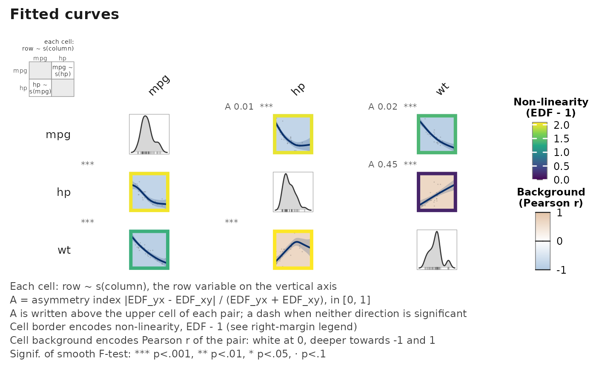

![[Stable]](figures/lifecycle-stable.svg)
Fits every ordered pair of numeric variables with janusplot_fit() and
draws the matrix with plot.janusplot_fit() in one call. Each cell
[r, c] off the diagonal shows the fitted spline of
gam(x_r ~ s(x_c) + <adjust>) from mgcv::gam() or mgcv::bam():
the row variable on the vertical axis against the column variable on
the horizontal axis, as in graphics::pairs(). The diagonal is blank;
the variable names sit on the border and a key in the top-left corner
shows the convention.
The two triangles differ by design: the asymmetry reveals heteroscedasticity, leverage and directional non-linearity that a single scalar correlation hides.
Usage
janusplot(
data,
vars = NULL,
adjust = NULL,
colour_by = "nonlinearity",
background_by = NULL,
annotations = NULL,
order = "original",
display = "fit",
group = NULL,
focus_by = NA_character_,
focus_threshold = "q90",
axes = "original",
style = janusplot_style(),
...
)Arguments
- data
A data frame. Column names need not be syntactic; fits run under internal aliases and every result reports the original names.
- vars
Character vector of numeric column names to fit, in matrix order.
NULL(the default) takes every numeric column ofdata. Identical or exactly collinear columns are not fitted against each other; their cells are listed inflags$failed.- adjust
One-sided formula of covariates and random effects added to every pairwise model, for example
~ s(age) + s(site, bs = "re").NULL(the default) fits unadjusted smooths. Character and logicaladjustcolumns are converted to factor before fitting. Random-effect smooths are excluded from prediction, so the curve and its band are population-level. With the identity link (the Gaussian default) the curve is the smooth averaged over the adjustment covariates of the data, and the plots draw each point as a partial residual: the observation with its own adjustment replaced by that average, so points and curve share one level (style$adjusted_points). With another link, numeric covariates are held at their mean and fixed factors at their most frequent level, and points stay raw.- colour_by
The quantity painted on each cell:
"nonlinearity"(the default; EDF minus 1 of the cell's smooth, sequential from 0),"asymmetry"(the pair's index A in[0, 1], the same in both cells),"pearson","spearman"or"kendall"(the pair's correlation on a diverging scale over[-1, 1]),"deviance_gap"(deviance explained by the smooth minus the straight line's) or"none".- background_by
The correlation that tints each cell's background:
"pearson","spearman","kendall", or"none"for no background. Left unset, it is"pearson"for a marginal fit and"none"for a fit withadjust, whose curves are adjusted while the correlations are marginal; set it to show the marginal correlation behind adjusted curves. Independent ofcolour_by. It cannot be combined withjanusplot_style(colour_channel = "fill"), which paints the same area.- annotations
Character vector, a subset of
c("A", "edf", "signif", "code", "shape", "k_warn", "n", "r", "formula"), written in the strip of every cell (or in its corners underjanusplot_style(annotation_position = "corners")): the asymmetry index, the EDF, the significance glyph of the smooth F-test (***p < .001,**p < .01,*p < .05,.p < .1, from the adjusted p-value when the fit hasp_adjustother than"none"), the two-letter shape code, the shape glyph, a warning sign on cells flagged by the k-check or capped at the distinct predictor count, the rows used, thebackground_bycorrelation of the pair (Pearson whenbackground_by = "none"), printed"r -0.03"("marginal r -0.03"for a fit withadjust), and the cell's formula, printedTemp ~ Ozone.NULL(the default) picks by matrix size:c("A", "signif")up to twelve variables,"signif"from thirteen, where 5-point strips of neighbouring cells would touch;character()writes none.- order
Order of the variables in the matrix:
"original"(the default, the order ofx$vars),"hclust"(hierarchical clustering of absolute Pearson correlations) or"alphabetical". Drawing only; the fit is unchanged.- display
What every off-diagonal cell shows:
"fit"(the default),"d1"(the first derivative of the smooth, whose zero crossings are turning points) or"d2"(the second derivative, whose zero crossings are inflections). A derivative view needs the fit to carry that order inx$settings$derivatives.- group
Name of a factor, character or logical column of
x$datawhose levels colour the raw points, with one legend below the matrix, orNULL(the default). Drawing only; the column never enters the model. The column must exist inx$dataand have at moststyle$group_max_levelslevels.- focus_by
NA(the default, no filter) or one of"asymmetry","edf","non_linearity"(EDF minus 1) and"k_flag". Cells whose metric falls belowfocus_thresholdare washed in grey atstyle$focus_dim_alpha; the matrix keeps its shape. A visual filter only; the fit and its table are unchanged.- focus_threshold
A quantile string,
"q90"by default (taken over the off-diagonal cells), or a single numeric cutoff. Ignored whenfocus_byisNA.- axes
Scale of the drawn axes:
"original"(the default),"standardised"((x - mean) / sdper variable, border label"var (z)"),"centred"(x - mean, label"var (centred)") or"rank"(empirical rank, label"rank(var)"). Drawing only; the same transform is applied to the points, the curve and the band.- style
A
janusplot_style()object holding every appearance setting.- ...
Model arguments of
janusplot_fit(), further arguments tomgcv::gam()ormgcv::bam(), and for one release the 0.2.0 appearance arguments listed in Details.
Value
A patchwork object, which is a
ggplot, as described in plot.janusplot_fit(). With the deprecated
with_data = TRUE, a list with elements plot (that object) and
data (the per-cell table of summary.janusplot_fit()).
Details
Model settings (k, bs, engine, method, na_action, n_grid,
derivatives, derivative_ci, derivative_ci_nsim, p_adjust,
shape_cutoffs, k_check_thresholds, auto_refit_k, k_max_iter,
discrete, nthreads, parallel, keep_fits) pass through ... to
janusplot_fit(), which forwards anything else to mgcv. Appearance
settings live in janusplot_style() and are passed as style. To draw
the same fit more than once, call janusplot_fit() and plot() it.
The 0.2.0 appearance arguments of janusplot() are accepted through
... for one release, each with a deprecation warning, and are removed
in 1.1.0: show_data, show_ci, palette, show_shape_legend,
glyph_style, labels, diagonal, label_srt, show_glossary,
compact, compact_threshold, compact_levels and focus_dim_alpha
are applied to style; label_cex, text_scale_diag,
text_scale_off_diag and glossary_scale are mapped to the labels,
diagonal, strip and glossary elements of
janusplot_style(text_size = ) at the matrix's variable count, close
to but not exactly the 0.2.0 sizes; fill_by is mapped to
colour_by; show_asymmetry and signif_glyph are mapped to
annotations; labels = "diagonal" is drawn as "border" with a
message; with_data = TRUE returns list(plot, data) with data the
table of summary(janusplot_fit(...)); save_as, save_width,
save_height and save_dpi write the plot once with
ggplot2::ggsave(). Arguments after adjust must be named: the
positional order of 0.2.0 is not shimmed.
See also
janusplot_fit() for the object behind the plot,
plot.janusplot_fit() for the view arguments, janusplot_style()
for the appearance settings.
Other smooth-associations:
janusplot_compare(),
janusplot_curves(),
janusplot_direction(),
janusplot_fit(),
janusplot_pair(),
janusplot_reference(),
janusplot_style(),
plot.janusplot_compare(),
plot.janusplot_fit()
Examples
# Three variables, six asymmetric pairwise GAM fits.
janusplot(mtcars[, c("mpg", "hp", "wt")], engine = "gam")

# Other colourings, groups and the derivative displays
# (display = "d1", "d2") are shown in vignette("janusplot").